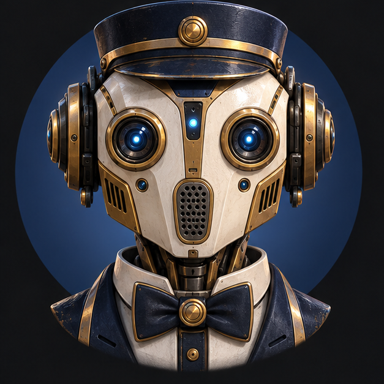
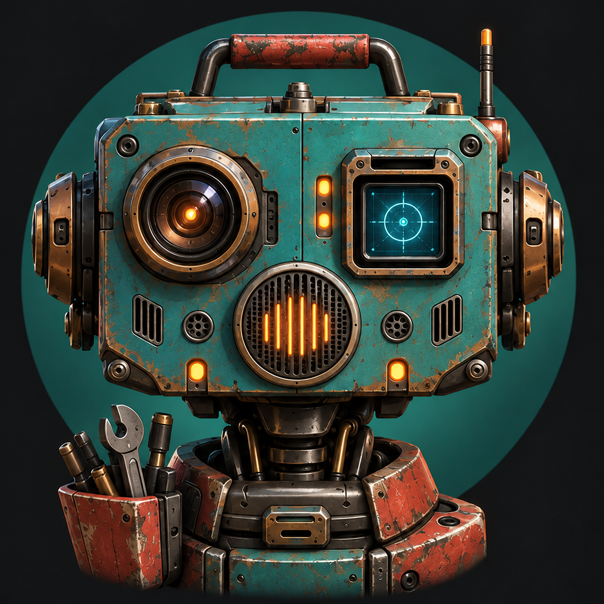
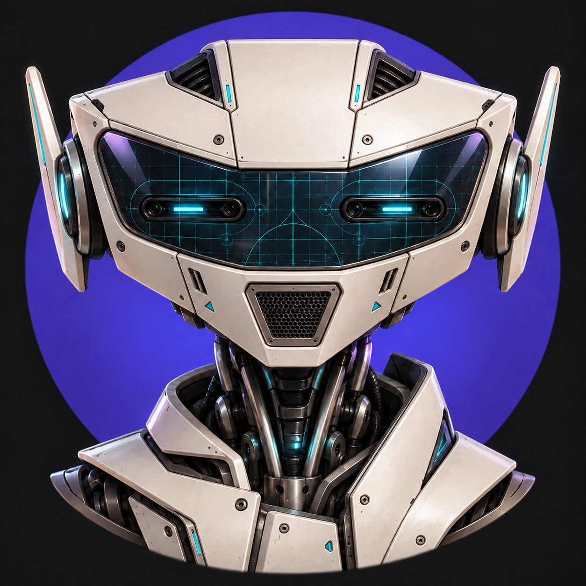

Nova Ready
I’m here when you need me.
MYAVATAR · V1 DESIGN REVIEW
High-fidelity implementation reference · September 2026
Stable geometry across state changes
Voice-first, with visible context and immediate interruption
Plain-language local setup and recoverable diagnostics
Balanced gives Nova stronger conversation and context while keeping voice responsive.
Models stay on this Mac. You can pause and resume this download.
Inspectable, attributable and reversible
RECENT
AVAILABLE SOURCES
Nova wants to read the selected MyAvatar folder to answer accurately. She cannot change files with this permission.
Focused work without losing the companion relationship


FINDINGS
npm testReads project files. Makes no changes.
The second direction feels most alive. Want it softer or more futuristic?